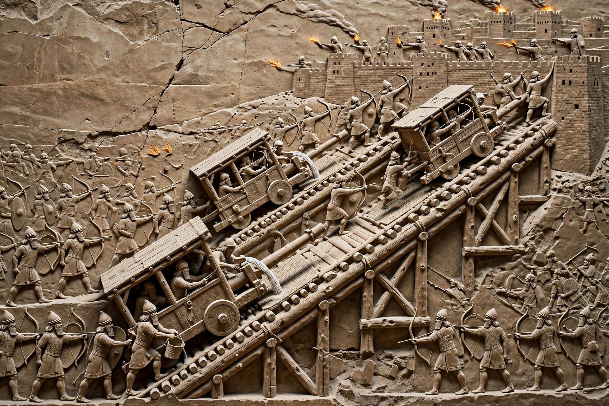

| Siege of Lachish | |
|---|---|
| Date | 701 BC |
| Location | Lachish, Kingdom of Judah (modern Israel) |
| Result | Assyrian victory; city captured |
| Belligerents | Neo-Assyrian Empire vs Kingdom of Judah |
| Commanders | Sennacherib vs Hezekiah's garrison |
The Siege of Lachish was the siege and capture of the Judean fortified city of Lachish by the Neo-Assyrian Empire under King Sennacherib in 701 BC. It formed part of Sennacherib's campaign against Judah during the reign of Hezekiah. The siege is exceptionally well documented: it is described in Assyrian annals, mentioned in the Hebrew Bible, depicted in detailed stone reliefs from Sennacherib's palace at Nineveh, and confirmed by extensive archaeological excavation at the site, identified with modern Tell ed-Duweir.

Lachish was the second most important city in Judah after Jerusalem, guarding a main road from the coastal plain into the hill country. After the death of Sargon II, several Levantine states revolted against Assyria. Hezekiah withheld tribute and fortified his cities. Sennacherib invaded in 701 BC, subdued Phoenician and Philistine cities, defeated an Egyptian-backed force at Eltekeh, and then moved against Judah's fortified towns.
Assyrian forces built a massive siege ramp — still visible today — against the south-west corner of the city's double walls, allowing battering rams to reach the walls under cover of archers and slingers. Defenders built a counter-ramp inside and attempted to set the rams alight. Excavations found hundreds of arrowheads, sling stones, helmets and a mass grave, consistent with a violent assault. The city fell, its inhabitants were deported, and its ruler was executed according to the reliefs.
From Lachish, Sennacherib sent officials to demand Jerusalem's surrender. Jerusalem itself was not captured; Assyrian annals claim Hezekiah was shut up "like a bird in a cage" and paid heavy tribute, while biblical accounts in 2 Kings, 2 Chronicles and Isaiah attribute the Assyrian withdrawal to divine intervention. The Lachish reliefs, now in the British Museum, and the Lachish letters (ostraca from a later Babylonian attack) make the city one of the key sites for Levantine archaeology.
See also: Hezekiah, Sennacherib, Assyrian siege warfare.